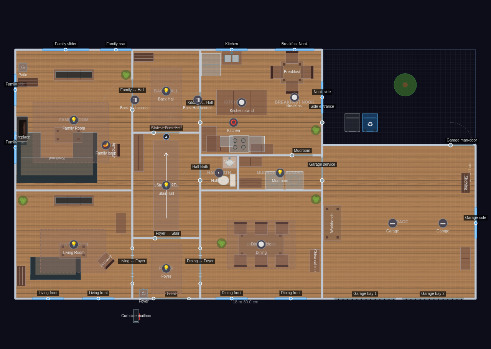
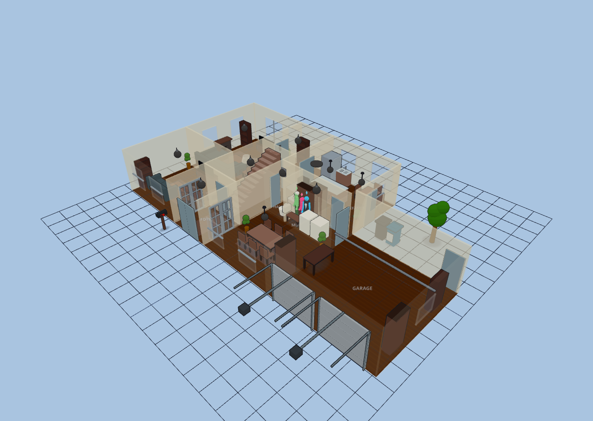
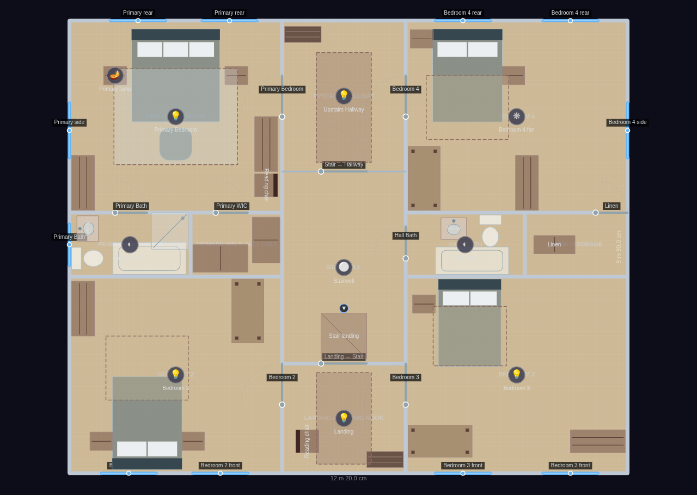
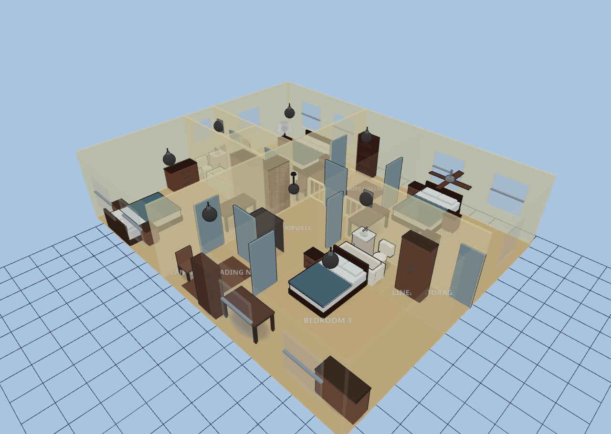
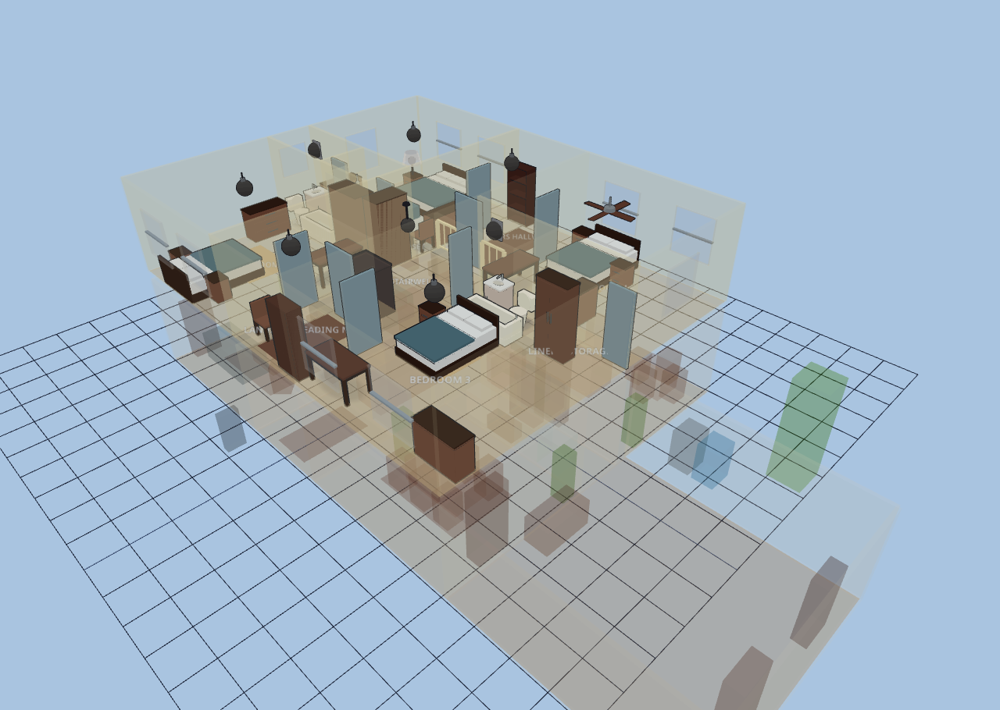

Two-Story Colonial
Explore it live above, or import the JSON in Diorama under Settings ▸ Data ▸ Configurations ▸ Import.
~2,600 sq ft (242 m²) · 2 floors + garage · 22 rooms
A traditional American center-hall Colonial: two full stories over a shared
12,200 × 9,900 mm house block, with a single-story attached 2-car garage tucked
to the east on the first floor. A switchback stair rises through the 2,700 mm
center-hall spine — the first-floor flight and the second-floor landing carry a
matching stairLinkId so avatars can transit between levels. Warm oak floors and
cream walls downstairs, carpet-toned bedrooms upstairs (rugs simulate carpet).
The L-shaped footprint leaves an unbuilt side yard beside the garage that renders
as bare ground (bins + a tree dress it up).
FIRST FLOOR
Living Room: sofa, angled armchair, coffee table, TV on a stand, bookshelf, rug, plant.
Foyer: entry bench, runner rug, plant; front door with a foyer switch.
Stair Hall: the switchback stair flight (linked to 2F), a landing bench.
Back Hall: bookshelf, runner; connects the stair hall to the family room + kitchen.
Dining Room: six-seat table, china cabinet, rug, plant; front-lit by two windows.
Half Bath: toilet + pedestal vanity; sconce.
Mudroom / Laundry: washer, dryer, boot bench, cubby cabinet; garage service door.
Family Room: U-sectional, coffee table, armchair, TV on a stand, bookshelf, rug,
a west-wall fireplace light, and a rear patio slider; ceiling light + a lamp.
Kitchen: two counter runs, stove, over-range microwave, dishwasher, sink under the
rear window, a center island, refrigerator, and an upper cabinet; island pendant.
Breakfast Nook: round table with four chairs, corner plant; pendant + picture window.
Garage: storage cabinet, workbench, bin shelving; two LED strips; two bay doors.
SECOND FLOOR
Bedroom 2: queen bed, two nightstands, dresser, desk, carpet-tone rug.
Landing / Reading Nook: the upper stair landing (linked to 1F), a reading chair,
bookshelf, and a rug at the top of the stairs.
Stairwell: open guardrail overlook down to the first floor (railing wall, no floor).
Bedroom 3: full bed, nightstand, dresser, study desk, rug.
Hall Bath: toilet, vanity, tub/shower combo; sconce.
Linen / Storage: built-in linen cabinet off the hall bath.
Primary Bedroom: king bed, two nightstands, dresser, reading chair, foot-of-bed
ottoman, cool-tone rug; ceiling light + bedside lamp.
Primary Bathroom: toilet, vanity, tub, corner shower; sconce.
Primary Walk-in Closet: two wardrobe runs + a center dresser.
Bedroom 4: queen bed, two nightstands, dresser, desk, rug.
Millwork detail: a double-leaf front door opens onto the center hall, and matched
glazed french pairs flank the foyer into the living and dining rooms (which makes
the foyer pure circulation, so the hall bench moved into the living room). A
wall-sconce pair lights the back hall, Bedroom 4 gets a bare ceiling fan, and a
mailbox stands at the curb by the front walk.
First Floor
11 rooms · 181 m² footprint


Second Floor
11 rooms · 121 m² footprint


Glass-house overview
